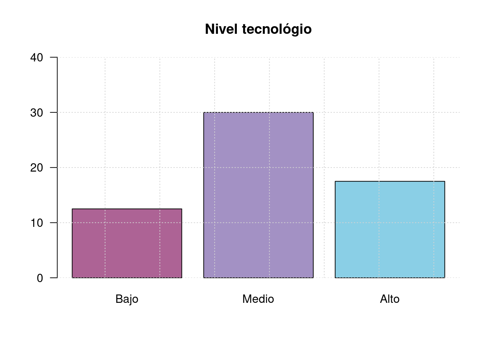
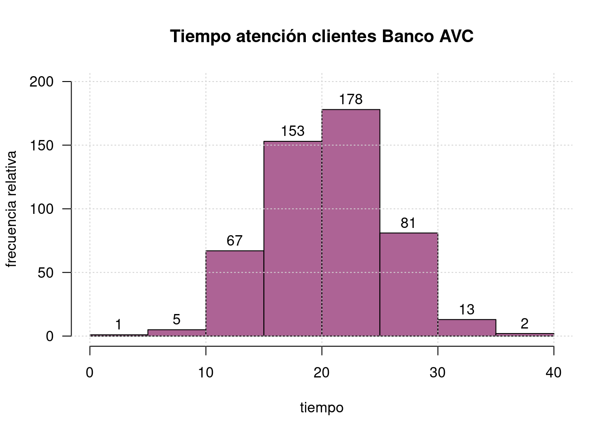

Monitoría 1
dgonzalez

Problemas
P1
Para el siguiente grupo de variables defina para cada caso el tipo de variable y la escala de medición
| a. | Número de botellas plásticas producidas diariamente en un proceso de moldeado, en Agua Limpia S.A |
| b. | Número de defectos observados por gabinete para equipo de cómputo de una distribuidora |
| c. | Tiempo de respuesta a los pedidos telefónicos en un restaurante |
| d. | Desperdicio de hojas por día en la fotocopiadora Copiamenos |
| e. | Tipo de defectos en tarjetas de circuito impreso de un lote de producción. |
| f. | Temperatura de cocción de la meladura en un proceso de producción de azúcar. |
| g. | Espesor de las piezas de metal producido en la empresa Tornos S.A. |
| h. | Técnica de mezclado de cemento tipo A por lote en la Cementera del Norte |
| i. | Cantidad de corriente en microamperios por cada medición en un cinescopio |
| j. | Grado de satisfacción de los clientes ante el servicio de mantenimiento de un taller mecánico |
| k. | Nota obtenida en el examen de estadística |
| l. | Nivel de estrés de un estudiante antes de una presentar una prueba escrita |
P2
Indique el concepto referido en cada uno de los siguientes enunciados:
| a. | Divide la muestra en dos partes de igual proporción. |
| b. | Describe la variabilidad de los datos con respecto a la media y tiene la misma unidad del promedio. |
| c. | Los valores de la variable se pueden ordenar en un sentido lógico, pero no es posibles establecer diferencias entre un par de valores |
| d. | Se obtiene al restar los extremos del conjunto de datos. |
| e. | Medida de centramiento que es muy sensible a los valores extremos. |
| f. | Estadístico que conlleva al centramiento por mayoría de datos. |
| g. | Estima los valores que pertenecen a un intervalo. |
| h. | Forma de los datos que se presenta cuando los valores de la media son parecidos a los de la mediana |
| i. | Con respecto a este valor, la suma de las desviaciones es igual a cero en cualquier distribución. |
| j. | Permite comparar el nivel de dispersión para diferentes grupos de datos y para diferentes variables. |
P3
Responda F (Falso) o V (Verdadero), justificando la respuesta en caso de ser Falsa.
| a. | La desviación estándar del conjunto de valores 2, 2, 2, 2 y 2 es 2. |
| b. | En una distribución de frecuencias acampanada, el rango de los datos es aproximadamente igual a seis desviaciones estándar. |
| c. | Dos conjuntos de datos de tamaños \(n_1\) y \(n_2\) tienen respectivamente promedios \(\bar{x}_{1}\) y \(\bar{x}_{2}\), a partir de esta información, se puede obtener el respectivo estadístico del total de datos (\(\bar{x}\)) |
| e. | Al hacer una gráfica, las frecuencias deben representarse en el eje de la ordenada. |
| f. | El histograma, es una presentación muy efectiva de las distribuciones de frecuencias. |
| g. | El polígono de frecuencias, es especialmente apto para comparar diferentes disribuciones. |
| h. | Una variable discreta puede ser representada mediante un histograma |
| i. | El diagrama de barras se utiliza para representar datos continuos. |
| j. | La relación de escalas en una gráfica debe de ser 1:1 |
| k. | Las gráficas se representan en el primer cuadrante del plano cartesiano. |
| l. | Si multiplicamos la variable por una constante, el coeficiente de variación se altera. |
| m. | La varianza de una constante por una variable es igual a la varianza de la variable. |
| n. | Al sumar 4 a cada uno de los números de la serie : 2, 6, 5, 9, 1 se obtiene la serie 6, 10, 9, 13 y 5. Las series tienen igual varianza, distinta media y diferente coeficiente de variación. |
P4
Elabore un gráfico para representar adecuadamente la siguiente información:
Durante 5 meses se construyen 134 kilómetros de carretera en la siguiente forma: En el primer més, 3.60% del total del proyecto; en el segundo més un 7.60% del total; en el tercer més, el 15.3% del total; en el cuarto més 24.5% del total y en último més, el 49% restante.
El grupo de Probabilidad y Estadística a cargo de un profesor está conformado por : 9 estudiantes de Ingeniería Electrónica, 6 de Ingeniería de Sistemas, 25 de Ingeniería Civil, 19 de Negocios Internacionales 8 de Biología y 3 de Ingeniería Mecánica. De los que estudian Ingeniería Electrónica 6 son hombres, de los matriculados en Ingeniería de Sistemas 2 son mujeres, de los que estudian Ingeniería Civil 18 son hombres, de los que estudian Negocios internacionales 16 son mujeres, de los que estudian Biología 5 son mujeres y finalmente de los que estudian Ingeniería Mecánica 2 son hombre.
Una consulta en tiendas en linea para memorias USB 128GB arrojó lo siguientes valores:
6 | 0 3 4
6 | 7 8 8 8
7 | 0 0 1 1 2 2 2 3 3 4 4
7 | 5 5 5 5 5 6 6 7 7 9
8 | 0 3 3 4
8 | 5 6 7 8 8 9 9
9 | 1- La clasificación de los empleados de una empresa por cargo es la siguiente: un Administradores, tres Ingenieros, treinta operarios, ocho celadores, dos contadores, tres secretarias, cinco supervisores, treinta y seis vendedores.
P5
Un vendedor convierte los pesos de los paquetes que se producen en su empresa de libras a kilogramos (\(1\) kg \(\simeq\) 2.2 lb.). Como afecta esta conversión la media y la desviación estándar?.
Nota:
\(\bar{x}=\frac{1}{n}\sum x_{i}\),
\(s=\sqrt{s^2}\),
\(s^2=\frac{1}{(n-1)}\sum (x_{i}-\bar{x})^{2}\)
P6
Para analizar la rapidez con que una máquina etiqueta las botellas en una compañía de jugos, se decide hacer seguimiento al número de botellas etiquetadas por día. A partir de los resultados procesados en R presente un análisis estadístico para el número de botellas etiquetadas por día
summarytools::descr(x)
Mean 7457.79
Std.Dev 826.51
Min 5944.00
Q1 6839.50
Median 7455.00
Q3 8117.00
Max 9121.00
MAD 956.28
IQR 1269.25
CV 0.11
Skewness 0.11
SE.Skewness 0.34
Kurtosis -1.01
N.Valid 48.00
Pct.Valid 100.00Punto 11 pag. 34 notas Alonso
P7
El director de la asociación de comerciantes de tomates del Valle del Cauca estudia el comportamiento de las ventas diarias de los últimos meses para una muestra de 60 nuevos microempresarios en la región. Dos de las variables más importantes a tener en cuenta para el estudio fueron: Ventas (meses Diciembre y Enero) y el nivel tecnológico de la empresa. La siguiente información corresponde a las ventas:
Diciembrec(14.3, 14.4, 11.1, 11.2, 11.4, 11.4, 11.4, 11.4, 10.0, 10.5, 10.5, 10.6, 10.7, 12.1, 12.3, 12.4, 12.8, 9.3, 9.2, 9.2, 9.1, 8.4, 8.5, 7.2, 7.1, 6.2, 13.7, 13.8, 15.0, 10.0)
Enero=c(12.0, 12.0, 12.0, 12.7, 12.8, 12.9, 8.0, 8.0, 13.2, 13.3, 13.5, 13.6, 11.0, 11.5, 11.6, 11.9, 10.4, 10.3, 10.7, 9.0, 9.2, 7.4, 7.7, 6.1, 5.9, 14.3, 14.2, 14.8, 15.1, 15.2)El nivel tecnológico de los 60 distribuidores mostró el siguiente comportamiento tomados en el estudio

Descriptive Statistics
Diciembre Enero
----------------- ----------- --------
Mean 10.84 11.34
Std.Dev 2.22 2.65
Min 6.20 5.90
Q1 9.20 9.20
Median 10.90 11.95
Q3 12.30 13.30
Max 15.00 15.20
MAD 2.30 2.37
IQR 3.03 3.80
CV 0.20 0.23
Skewness -0.07 -0.48
SE.Skewness 0.43 0.43
Kurtosis -0.66 -0.87
N.Valid 30.00 30.00
Pct.Valid 100.00 100.00De acuerdo con la información anterior, responda falso o verdadero a las siguientes premisas. En caso de ser falsa justifique su respuesta.
| a. | La variable ventas mensuales se mide en escala de razón |
| b. | Las ventas de 6.2 millones representan un dato atípico, para la información de Mayo |
| c. | Las ventas de Mayo son más homogeneas que las de Junio |
| d. | La mediana de las ventas en el mes de Junio es de 11.15 |
| e. | La varianza para el mes de Junio es de 5.21 |
| f. | Aproximadamente el 68% de las ventas de Junio están en el intervalo (8.7 ; 13.3) |
| g. | Si el estado cobra un impuesto sobre las ventas del 16%, el promedio del impuesto en Junio es de 1.75 |
| h. | En la variable nivel tecnológico, el promedio es: \(\dfrac{12.5+30+17.5}{3}\) |
| i. | El cuartil 1 \(Q_{1}\) para las ventas de Junio es 8.0 |
| j. | El tipo de estudio corresponde a la Estadística Inferencial ya que se realizó muesteo |
| k. | La variable nivel tecnológico de la empresa se clasifica como nominal |
| l. | 30 empresas tienen un nivel tecnológico medio |
| m. | Las ventas de Mayo muestran sesgo negativo |
Tomado de Arroyo(2012)
P8
A partir del siguiente gráfico de los tiempos de atención en una entidad bancaria determine la media y la mediana (n=500 clientes). Se puede afirmar que la distribución del tiempo de atención es asimétrica positiva?. Se desea establecer los porcentajes de clientes atendidos en los rangos bajos (menos de 10 min), medios (entre 10 min y 12 min), altos (más de 12 min), con el fin de evaluar si en su mayoría los tiempos se concentran en el rango medio. Verifique si esta afirmación es correcta.

P9
En un estudio realizado para investigar la distribución del tiempo de frendo total ( tiempo de reacción más tiempo para pasar del acelerador al freno, en ms) en condiciones reales de manejo a 60 km/h se obtuvo el siguiente resumen de la distribución de los tiempos:
Descriptive Statistics
N: 450
x : frenado
-------------------------
Mean 529.35
Std.Dev 94.39
Min 277.14
Q1 464.50
Median 527.85
Q3 591.93
Max 804.80
MAD 94.30
IQR 127.33
CV 0.18
Skewness 0.06
SE.Skewness 0.12
Kurtosis -0.23
N.Valid 450.00
Pct.Valid 100.00¿Qué se concluye en relación con la forma de estos datos?. Acompañe su análisis de un diagrama de cajas
P10
Los pesos en libra de 54 paquetes de hamburguesas fueron obtenidos en el mostrador de un supermercado de cadena de la ciudad:
The decimal point is 1 digit(s) to the left of the |
7 | 55
8 | 3367799999
9 | 22366667778899
10 | 668888
11 | 22224444778888
12 | 4488
13 | 88
14 | 11sum(peso)
sum((peso-mean(peso))^2)
sum(peso^2)
\(\displaystyle\sum_{i=1}^{54}(x_{i}-\bar{x})=0\)
\(\displaystyle\sum_{i=1}^{54}x_{i} =56.83\)
\(\displaystyle\sum_{i=1}^{54}(x_{i}-\bar{x})^{2}=1.429387\)
\(\displaystyle\sum_{i=1}^{54}x_{i}^2 = 61.2377\)
- Construya un diagrama de cajas y a partir de este resultado determine si su forma es simétrica
Para construir el diagrama de cajas se emplean los cuartiles (\(Q_{1}\), \(Q_{2}\) y \(Q_3\)). Ellos determinan la caja central del diagrama. Las lineas a lado y lado
| a. | Se puede afirmar que existen datos atípicos? |
| b. | Podría afirmarse que más del 20% de los paquetes tienen un peso superior a 1.11 libras? |
| c. | Realice un breve descripción de la información obtenida |
(Tomado de Mendenhall 2006)
P11
El puntaje alcanzado por estudiantes en un test para medir el razonamiento deductivo mediante una prueba de personalidad de Millon (MPIS) se presenta en la siguiente tabla:
| Edad | Marca de clase | Frecuencia Absoluta | Frecuencia Relativa | Frec. Acum. Absoluta | Frec. Acum. Relativa |
|---|---|---|---|---|---|
| [0-10) | 3 | ||||
| [10-20) | 6 | ||||
| [20-30) | 7 | ||||
| [30-40) | 12 | ||||
| [40-50) | 3 |
A partir de la información responda los siguientes interrogantes:
| a. | Los valores obtenidos se pueden considerar como valores homogéneos? |
| b. | La distribución representada por la tabla se puede considerar como simetrica? |
| c. | Qué indiador de centro podría ser más apropiado para representar los datos? Justifique su respuesta. |
| d. | Describa los resultados obtenidos en la medición. |
P12
Los tiempo en minutos de demora en la entrega de pedidos por parte de dos proveedores de insumos para laboratorio que llamaremos \(P_{A}\) y \(P_{B}\) sun los siguentes
PA=c(13,44,10,11,20,29,30,44,56,63,70,82)
PB=c(25,14,20,22,30,33,40,45,49,52,55,58)Con base en la información, cuál proveedor escogería? Justifique su respuesta
(Tomado de Arroyo(2012))